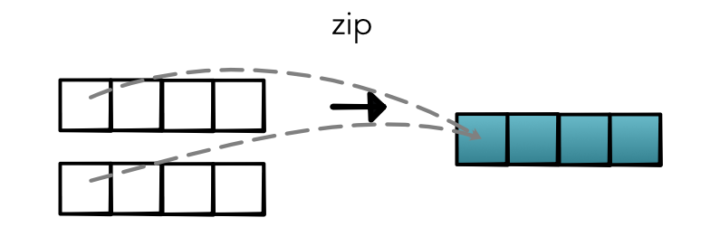
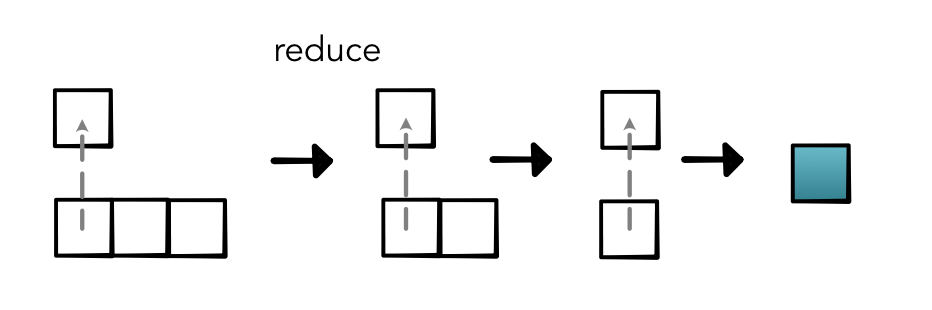

Assignment¶
Welcome to the preliminary assignment for MiniTorch assignment. This assignment is focused on introducing the core technologies behind the library and to introduce the testing, dataset and visualization frameworks that we will use throughout the course. Additionally we will start building up some of the infrastructure for MiniTorch itself.
Before beginning this assignment be sure to read Module 0, in particular Workspace Setup and Contributing which will help you get started.
Task 0.1: Operators¶
Implement a series of basic mathematical functions in Python. Each of these functions is quite simple, but we they will form the basis for the the library. Be sure you are familar with each of the functions as some might be new.
Note
For now you can ignore the @jit symbol at the top of functions, it is a no-op. We will come back to its role in Module 3.
Todo
Complete the following functions in minitorch/operators.py and pass tests marked as task0_1.
-
minitorch.operators.mul(x, y)¶ \(f(x, y) = x * y\)
-
minitorch.operators.id(x)¶ \(f(x) = x\)
-
minitorch.operators.neg(x)¶ \(f(x) = -x\)
-
minitorch.operators.add(x, y)¶ \(f(x, y) = x + y\)
-
minitorch.operators.lt(x, y)¶ \(f(x) =\) 1.0 if x is greater then y else 0.0
-
minitorch.operators.sigmoid(x)¶ \(f(x) = \frac{1.0}{(1.0 + e^{-x})}\)
-
minitorch.operators.relu(x)¶ \(f(x) =\) x if x is greater than 0, else 0
(See https://en.wikipedia.org/wiki/Rectifier_(neural_networks).)
-
minitorch.operators.relu_back(x, y)¶ \(f(x) =\) y if x is greater then 0 else 0
Task 0.2: Testing and Debugging¶
Note
This task requires familiarity with testing and property tests. Be sure to first carefully read the section on Property Testing and the Hypothesis documentation.
Implement a set of tests for your operators. These tests will ensure that you functions not only work, but obey high-level mathematical properties for any input.
Todo
Complete the following functions in tests/test_operators.py and pass tests marked as task0_2.
Task 0.3: Functional Python¶
Note
This task requires familiarity with basic functional programming concepts and notation. This Tutorial is a good starting place.
To practice the use of higher-order functions in Python, implement three basic functional concepts. Use these in combination with the operators described in Task 0.1 to build up more complex mathematical operations that work on lists instead of single values.
Todo
Complete the following functions in minitorch/operators.py and pass tests marked as tasks0_3
-
minitorch.operators.map(fn)¶ Higher-order map.

See https://en.wikipedia.org/wiki/Map_(higher-order_function)
- Parameters
fn (one-arg function) -- process one value
- Returns
a function that takes a list and applies fn to each element
- Return type
function
-
minitorch.operators.zipWith(fn)¶ Higher-order zipwith (or map2).
See https://en.wikipedia.org/wiki/Map_(higher-order_function)
- Parameters
fn (two-arg function) -- combine two values
- Returns
takes two equally sized lists ls1 and ls2, produce a new list by
- Return type
function
applying fn(x, y) one each pair of elements.
-
minitorch.operators.reduce(fn, start)¶ Higher-order reduce.
- Parameters
fn (two-arg function) -- combine two values
start (float) -- start value \(x_0\)
- Returns
function that takes a list ls of elements \(x_1 \ldots x_n\) and computes the reduction \(fn(x_3, fn(x_2, fn(x_1, x_0)))\)
- Return type
function
Task 0.4: Modules¶
Note
This task requires familiarity with modules. Please read Modules to get started. If you want more context for how modules are used you may find it helpful to skip ahead and read the torch module tutorial.
This task is to implement the core structure of the Module
class. You will implement a tree-data structure that
stores named Parameters on each node. This datastructures makes it
easy for users to create trees that can be walked to find all of the parameters of
interest.
Todo
Complete the functions in minitorch/module.py and pass tests marked as tasks0_4.
-
minitorch.Module.train(self)¶ Set the mode of this module and all descendent modules to train.
-
minitorch.Module.eval(self)¶ Set the mode of this module and all descendent modules to train.
-
minitorch.Module.named_parameters(self)¶ Collect all the ancestor parameters of this module.
- Returns
Each name (key) and
Parameter(value) under this module.- Return type
dict
Task 0.5: Visualization¶
Note
This task requires familiarity with visualization tools described in Visualization.
For the first few assignments we will be using a set of datasets that are implemented in project/datasets.py. Read through the code in project/run_torch.py to see an implementation of a model for this code in Torch.
Todo
Start a visdom server. Make sure you are able to run this code and observe the progress of the model with the Visdom setup.
>>> python project/run_torch.py
Save the loss graph of this model and the final image it generates and commit them to your repo. Add the images to the README before checking in.